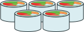
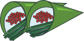

FUN FACTS
Here are some things that you might not know about sushi!
SASHIMI, NIGIRI.... WHAT?!


DID YOU KNOW?
Sushi is not raw fish.
Sushi refers to cooked rice that is seasoned with vinegar, sugar, and salt, and filled with other ingredients like seafood and vegetables.
Sashimi's meaning is quite literal.
Sashimi is consisted of words "Sashi" meaning pierced and "mi" meaning body.
Bluefin Tuna Sushi is the most expensive in the world.
The Bluefin Tuna reached its highest cost at $396,000 for a 342kg fish ($1,158/kg) in January 2011 at the Tsujiji Fish Market in Tokyo.
DID YOU ALSO KNOW?
Sushi must be consumed ASAP.
Sushi taht was stored in the freezer starts to turn sour and loses its flavor. The fish is oxidized and exposed to the air once it has been cut.
Sushi knives are sharpened everyday.
Sashimi is consisted of words "Sashi" meaning pierced and "mi" meaning body.
Sushi knives are sharpened differently.
Japanese knives are sharpened only on one side, and they are only used to cut on the pull stroke rather than the push stroke.